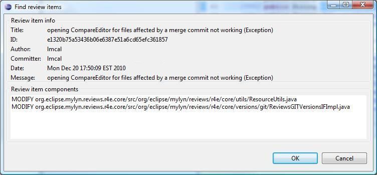

| Tasks | ||
|---|---|---|
|
|
|
|
| Concepts | Updating This Document | |
From the Review Navigator view, right click to open up the context menu


There are two types of Review Items to add to an R4E Review
These types of items are created from the manual selection of a Workspace resource (i.e. File) or a portion of a resource (line ranges within a file).

To create a commit review item, right click on a project attached to the Egit team provider (see Project Configuration) to access the context menu shown below.

The Last commit is proposed as the review item. 
Similarly to Resource Review Items an anomaly can be created from a selected Resource or a portion of a resource.


Global anomalies are not specific to a Resource and the scope shall be described by the creator, the context menu for it is under the R4E Navigator -> Global Anomalies

It is possible to establish a dialog related to a specific selected anomaly. So each user can add his/hers specific comments.


Updates to any review elements are performed via the Eclipse properties view, by modifying the context of the corresponding text box.

The Navigator view provides different kind of filters to limit the visible items within the tree of review elements
|
|

|
|
| Concepts | Updating This Document |